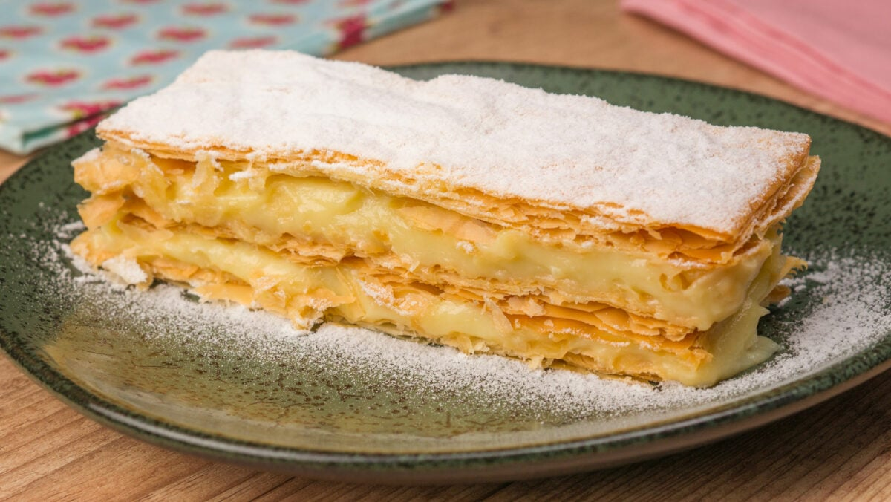
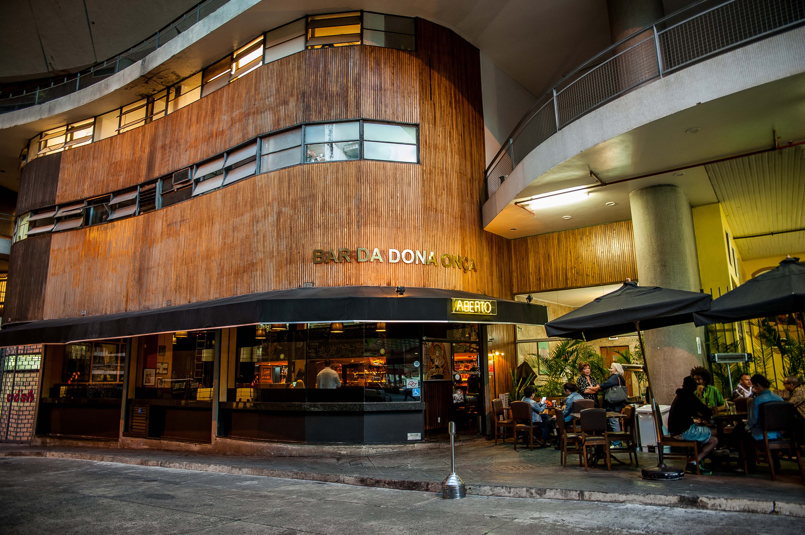
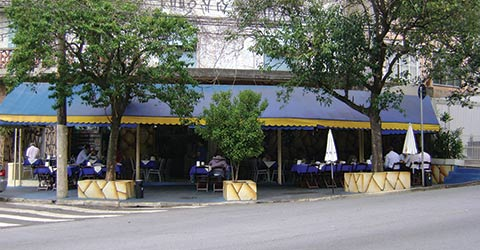
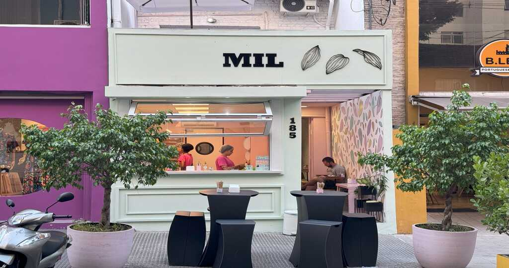

Sobremesas Típicas
Algumas das sobremesas mais famosas do Estado — receitas, imagens e pequenas descrições.
| Imagem | Nome | Descrição |
|---|---|---|
.jpg) |
Pudim de Leite | Clássico cremoso com calda de caramelo — receita simples com poucos ingredientes. |
 |
Brigadeiro | Docinho de leite condensado e cacau, enrolado e coberto com granulado. |
|  | Mil folhas de doce de leite | Camadas folhadas com doce de leite — crocante e doce. |
Receita rápida — Pudim de Leite
Ingredientes: 1 lata de leite condensado, 2 medidas (da lata) de leite, 3 ovos. Bata tudo, asse em banho-maria por 50 minutos. Desenforme quando frio.
Principais Restaurantes
Locais conhecidos onde você pode provar pratos típicos da região.

Bar da Dona Onça
Restaurante tradicional com pratos paulistas clássicos. Endereço: Centro — SP.

Pé Pra Fora
Cozinha contemporânea com ingredientes locais — destaque para sobremesas.

Mil Confeitaria
Famosa por doces finos e bolos artesanais — ótimo para quem ama sobremesas.
Bar do Mané
Boteco com sanduíches típicos e ambiente descontraído.
Curiosidades
Fatos interessantes sobre a culinária e as tradições locais.
1. O brigadeiro surgiu nas festas brasileiras como um doce simples e se tornou símbolo nacional.
2. O sanduíche de mortadela ganhou fama por grandes porções servidas em mercados tradicionais.
3. O "virado à paulista" era originalmente uma refeição de trabalhadores, rica em energia e fácil de preparar.
4. Muitas confeitarias locais mantêm receitas passadas de geração em geração — tradição forte na cultura doceira.